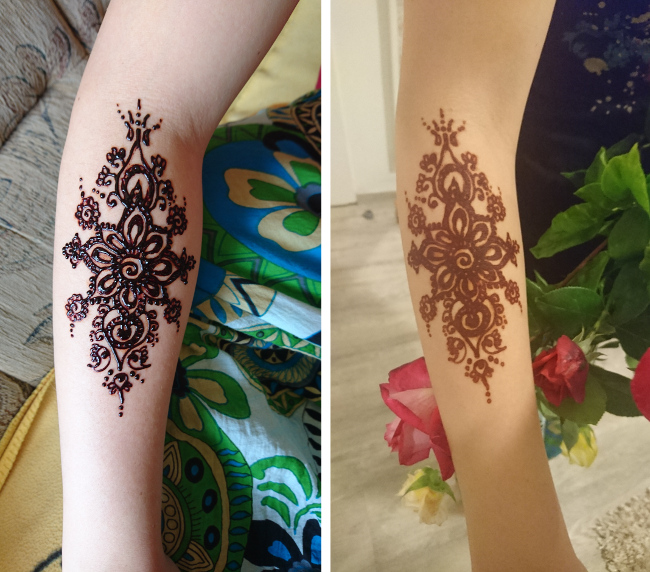

Je libo...
- Rasta copánky
- Francouzské copánky
- Úpravy dreadů
-
Volné termíny
- Henna
- Karetky
-
- Fotogalerie
- Ceník
- Kontakt
- Vzkazy
- Odkazy
Evanii - rasta copánky v Brně
Henna
Henna je rostlina, která byla objevena před mnoha tisíci lety v Egyptě. Její barvivo se mimo jiné používá pro zdobení kůže. Obrázek vydrží obvykle 1-2 týdny v závislosti na stavu pokožky, místě zdobení a četnosti mytí daného místa. Stejně tak je na typu pokožky a umístění závislý výsledný odstín obrázku, který může být od oranžové až po hnědou (čistě přírodní henna nikdy není černá). Ideální je hlavně pro kreslení různých ornamentů a linek. Nehodí se pro stínované obrázky a nelze dosáhnout zdaleka takových detailů, jako je tomu u klasického tetování. Pokud mám aktuálně hennu skladem, ráda vám namaluji obrázek dle vašehopřání :-)


Jak si sám namíchat pastu z henny?
Nejjednodušší samozřejmě je koupit si pastu už hotovou. Počítejte však s tím, že ne každá pasta je stejně kvalitní - některé pasty malují velmi špatně, u jiných zase nezjistíme složení, zda neobsahují nějaké přidané látky, které by mohly potenciálně způsobit alergickou reakci. Nabízí se tedy možnost si pastu vlastnoručně namíchat.
Je to pracnější, ale rozhodně si užijete víc zábavy. Nejdůležitější je získat prášek z henny. Ten seženete buď v různých orientálních obchůdcích (cena kolem 80,-Kč - 200,-Kč), může vám ji někdo prášek přivézt z dalekých cest nebo samozřejmě můžete objednat přes internet :). Bohužel je opět risk, že narazíte na hennu, která byla dlouho skladovaná a bude malovat špatně, to bohužel přes obal nezjistíte. V krajním případě můžete použít i prášek z drogerie určený pro barvení vlasů. Hodit se nám bude také speciální olejíček (tzv. mehndi oil), který je vyrobený ze směsi aromatických bylin a pomáhá barvě prostoupit hlouběji do pórů kůže., kterou si musíte pořídit je speciální olejíček. Olejíček koupíte obvykle v orientálních obchůdcích prodejnách za 25-40,-Kč za lahvičku). Můžete použít i smíchaný hřebíčkový a eukalyptový olej. Dále si připravte hodně silný výluh z černého čaje, nebo kávy a citrónovou šťávu.
A teď to nejdůležitější. Všechno smícháme dohromady a pořádně promícháme. Při troše snahy by vám měla vzniknout hmota konzistence hustšího kečupu (přibližně). Pastu musíme nechat minimálně 2 hodiny odstát, než začneme malovat. Ideální je připravit si hennu alespoň den dopředu. Přechováváme ji v chladnějším prostředí (já ji dávám do ledničky).

Na obrázku vidíte prášek z henny a aplikátor
Jak malovat?
Nejlepší je kreslit zdobící tubičkou, kterých existuje několik druhů, případně si vyrobíme z celofánu malý kornoutek, kterému ustřihneme špičku. Pokud ani jedno z toho nemáte, bude vám stačit i proděravělý igelitový sáček (doporučuji ty malé, uzavíradelné), nebo jakákoli tuba, ze které vám bude vylézat přiměřeně tenký pramínek - raději dírku děláme menší, než větší. Zvětšit jde kdykoli. Výborný aplikátor mám z Ameriky (na obrázku výše), je to malá měkká plasová lahvička, která má víčko na kterém je připevněno něco jako v půli uřízlá injekční jehla. Tímto udělátkem se maluje moc pěkně. Pokud jsme nuceni improvizovat, můžeme malovat i pomocí dřívka (např. párátka). Na místo, které budeme zdobit nejprve naneseme olejíček. Uchopíme tubu, ze které mírným stiskem vytlačujeme pastu tak, aby byla dekorace stejně silná na všech místech (na kůži bude zůstávat vrstvička, která začne po chvíli zasychat. Malůvku necháme co nejdéle schnout, poté ji buď jemně seškrábneme (nejlépe ubrouskem) a místo opět potřeme olejem (nejlepší je tento postup několikrát opakovat), nebo můžeme účinek prodloužit tím, že si místo s obrázkem ovážeme například obinadlem a necháme působit třeba i přes noc. Také se mi osvědčilo vždy po jisté době do zasychající malůvky nanést znovu olejíček a tím prodloužit dobu schnutí.
Péče o obrázek
Ozdobené místo by se nemělo dalších 6-12 hodin mýt, jelikož pasta v této době „zraje“ a mění svůj odstín. Na počátku bývá kresba často tmavě žlutá až oranžová, nakonec oranžová až tmavě hnědá. Výsledná barva závisí na typu kůže i místě,kam se maluje. Platí, že na opálenou kůži chytá barva lépe. Budeme-li místo s obrázkem pravidelně natírat olejem či mastnými krémy, vydrží nám déle. Nejlépeobrázky chytají na hřbet ruky a nohy, případně dlaně a prsty. Na ostatních částech těla může henna chytat hůřea opravdu dost záleží na pigmentaci kůže.
Ukázky malování hennou v galerii